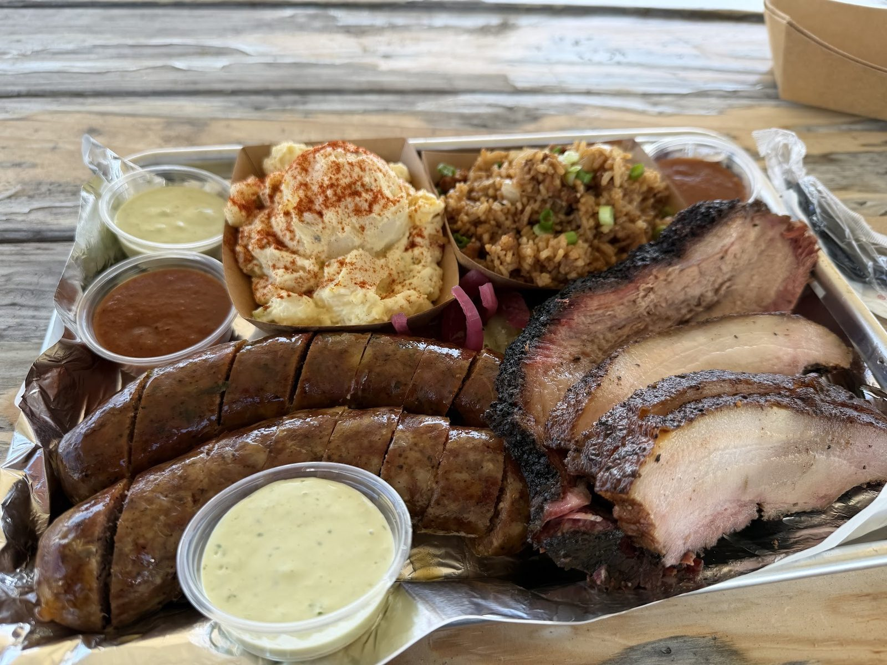

Brisket & ribs
Smoked brisket, tender and juicy, and solid pork ribs.


Family-owned BBQ · Round Rock, TX
Brisket, ribs and Poblano Oaxaca sausage with Mexican, Chinese and Hong Kong flavors.
What's on the tray
Brisket, sausage, ribs and fried rice.
Smoked brisket, tender and juicy, and solid pork ribs.
Smoky sausage with a green sauce on the side.

Rich, authentic fried rice, next to creamy potato salad and mac salad.




4.9144 Google reviews
Usually a BBQ place has a couple go to items that stand above the rest. I can say that’s not the case with Smoky Buns. Their Brisket, Pork Belly Fried rice, Poblano Oaxaca Sausage, Pork Ribs, Mac Salad, and Potato Salad were all top notch quality. All of items complimented one another in a way that perfectly went together.
Finding Smoky Bun was such a pleasant surprise! Jesse Escobedo, the pitmaster and the person serving the guests, gave us an incredible dining experience. You can immediately tell how much passion and dedication he puts into every dish.
Alright, straight up the most fire bbq ive had. Ive been to them all. I dont even know where to begin. Everything was 10/10 EXCEPTIONAL. Go show bro some love, you'll have a new go to bbq spot.

Our story
Family-owned BBQ. Bold flavors from our heritage meet traditional smoke: Mexican, Chinese and Hong Kong cooking with slow-cooked meat.
Pitmaster Jesse Escobedo serves you himself. Almost everything is made from scratch, bun bread aside.
Easygoing and tucked into a neighborhood, with covered picnic tables. Everything can sell out fast.
Visit
311 Highland Estates Dr, Round Rock, TX 78664
Tucked into a Round Rock neighborhood, with covered picnic tables. Come early.